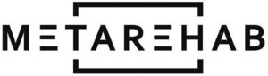

Trade Mark Journal No.2025/018 2 May 2025
WO0000001850383 (41)
Office of origin: Ukraine
Date of International Registration:26 February 2025
Date of designation in the UK:
26 February 2025

The mark is a combined trademark with wording “METAREHAB” represented in Latin characters in an original graphical manner, in combination with a stylized rectangle image.
International priority date claimed: 13 February 2025
(Ukraine)
- Class 41
- Academies [education]; teaching; arranging and conducting of congresses; arranging and conducting of colloquiums; arranging and conducting of conferences; arranging and conducting of in-person educational forums; arranging and conducting of workshops [training]; arranging and conducting of entertainment events; arranging and conducting of seminars; arranging and conducting of symposiums; arranging and conducting of sports events; electronic desktop publishing; research in the field of education; educational examination; providing information in the field of education; providing training and educational examination for certification purposes; providing online videos, not downloadable; providing online electronic publications, not downloadable; providing online images, not downloadable; correspondence courses; training services provided via simulators; tutoring; writing of texts; organization of exhibitions for cultural or educational purposes; organization of competitions [education or entertainment]; vocational retraining; coaching [training]; health club services [health and fitness training]; multimedia library services; educational services; practical training [demonstration]; conducting fitness classes; rental of training simulators; vocational guidance [education or training advice]; online publication of electronic books and journals; publication of books; publication of texts, other than publicity texts; entertainment services; production of podcasts; production of radio and television programmes; physical education.
Pavlov Sergii Vasylovych
Representative: KANTSYPA Artem Volodymyrovych, INVENTA Co., Ltd.,, P.O. BOX 1212, Kharkiv 61072, UKRAINE